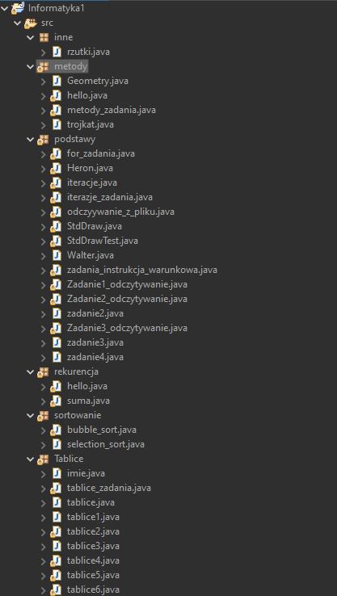

Nazywam się Walter Szewczyk i mam 15 lat. Uwielbiam zwierzęta, mieszkam z dwoma kotami. Interesuję się przedmiotami ścisłymi, a zwłaszcza informatyką. Podczas 8 klasy szkoły podstawowej nauczyłem się podstaw pythona i podstaw htmla.
Wiem jak wygląda ich składnia oraz potrafię korzystać z internetu aby poszerzać swoją wiedzę.
Przez następne cztery lata chciałbym móc umiejętniej posługiwać się pythonem i htmlem, a także poznać trzeci język programowania.
Chciałbym także wiedzieć, jak tworzyć modele 3D np. w Blenderze, a także móc je drukować w drukarce 3D.
Po ukończeniu swojej edukacji chciałbym, aby moja praca była związana z informatyką.
Do niedawna chciałem tworzyć gry komputerowe, natomiast obecnie myślę nad bardziej ogólną pracą informatyczną, np. pracą dla firm IT.
W pierwszej klasie nauczyłem się korzystać z iteracji, metod, tworzyć programy sortujące oraz wyczytywać i korzystać z danych z plików w Javie.
Wszystkie moje projekty w Javie z pierwszej klasy
Kot brytyjski krótkowłosy, rasa moich dwóch kotów